Fieldsmith
PDF Form Field Editor: turn PDFs, Word files, scans and photos into fillable forms, test them, fill them from Excel, export form data to Excel and create fillable Word forms.
Fieldsmith works on your own PC; documents are never uploaded, and the internet is used only for the license check. Every walkthrough below uses the real program: click a step, click the picture to zoom to each red mark.

Quick Start
From a flat PDF to a fillable form in five steps.
A form you made in Word?
Open the .docx directly: Fieldsmith converts it and keeps the Word form controls as fields.
Only on paper?
Scan it or take a phone photo and open the PDF: see Scans and photos.
Many copies to fill?
Fill them from an Excel table: see Fill from Excel.
The main window
Toolbar, left panel, page, Field Inspector and field list.
Analyze a PDF
How fields are found, and the settings of the next Analyze.
Analysis runs entirely on your computer. Fieldsmith reads the page layout — boxes, table cells, underlines, dotted leaders, check-box symbols and the text next to them — and makes the right kind of field, named after its label. Fields that already exist in the PDF are always kept.
Review uncertain fields
F3 / Shift+F3 jump to the next / previous uncertain field; the Uncertain box above the field list shows only them.
Check Form (F7)
Finds empty or duplicate names, radio buttons without a group, drop-downs without choices, overlapping fields — and repairs what is safe to repair. It also runs before every export.
Draw and edit fields
Draw tools, Snap, Guides, Undo.
- Drag a field to move it, drag its handles to resize it. Arrow keys nudge by 1 pt (Shift 10 pt, Ctrl 0.25 pt).
- Ctrl+D duplicates; Duplicate with Step… (Ctrl+Shift+D) makes a row or column of identical fields; Copy to Pages… repeats fields on other pages.
- Right-click a field for Duplicate, Copy Formatting, Bring to Front / Send to Back and Delete.
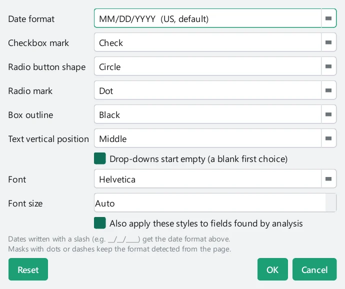
Field Inspector
Every property of a field on four tabs.
Many fields at once
Select, align, match size, distribute.
Preview: test the form
Use the form exactly as your recipients will.

Scans and phone photos
Straighten, clean, read (OCR), then find the fields.
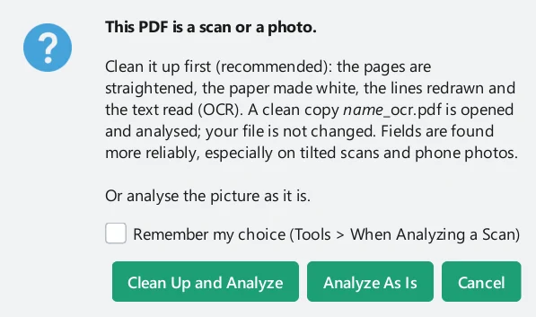
OCR languages included: English, German, French, Italian, Spanish, Portuguese, Latvian, Russian and Ukrainian. More can be added: put *.traineddata files into <program folder>\tesseract\tessdata; Tools → OCR Languages chooses them.
Fill from Excel · one PDF per row
Individual PDFs: every Excel row becomes a filled PDF.


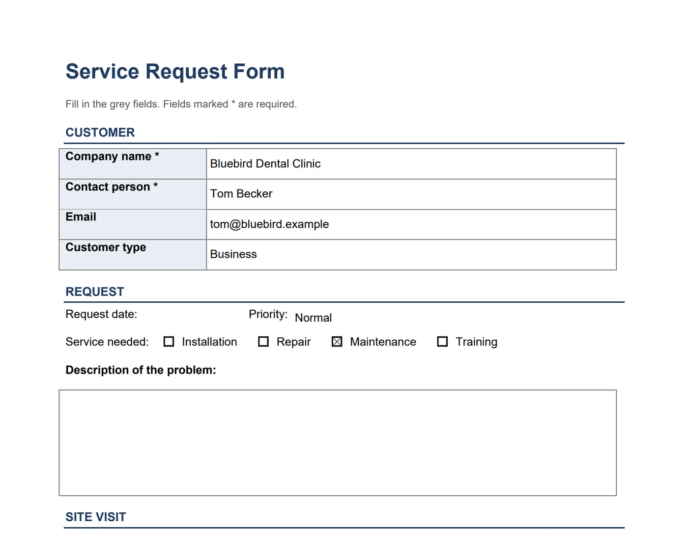
Fill from Excel · lists
Collective PDFs: many rows fill one list form.
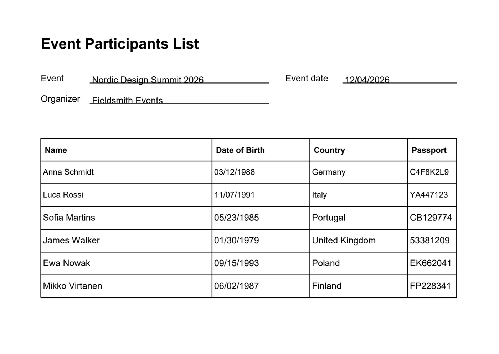
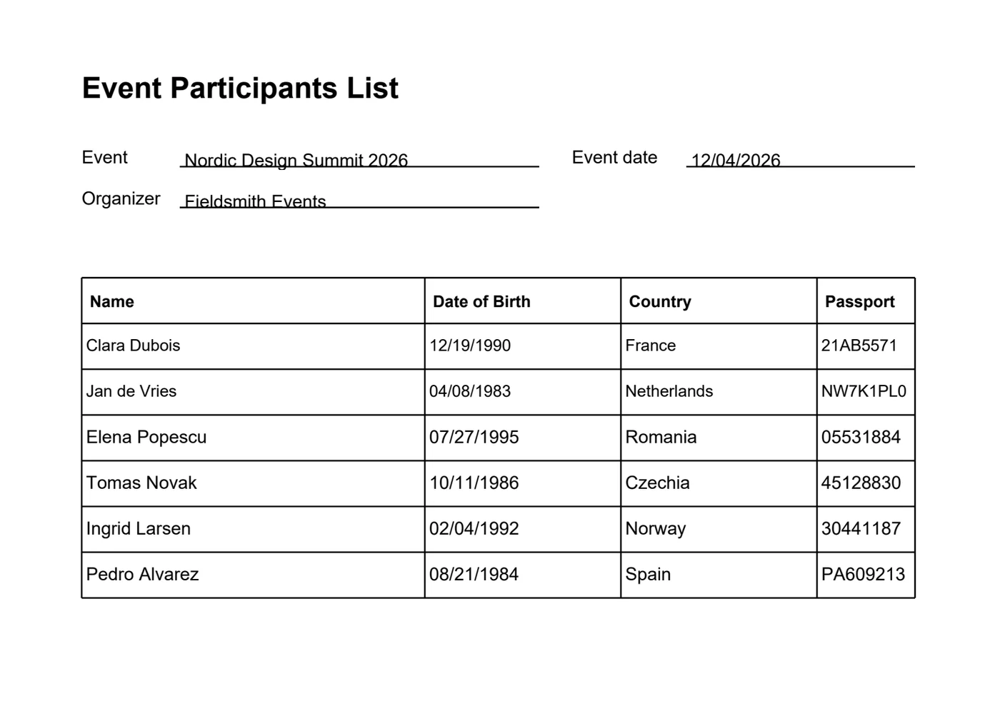
Export to Excel
The data of many filled PDF forms in one Excel table: one row per form.
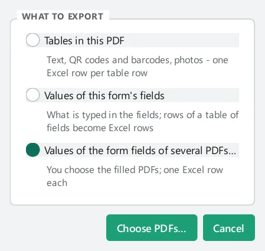

Choose the filled PDFs (Ctrl/Shift+click or Ctrl+A for a whole folder). A form with a table (fields like Name_1, Name_2 …) can be written one row per table row instead. More → Save Form Data (JSON / XFDF) and Fill PDF from JSON / XFDF exchange data with other systems.
Fillable Word forms
Export the form to Word with real form controls.
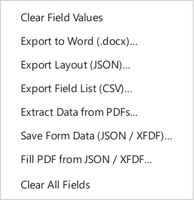
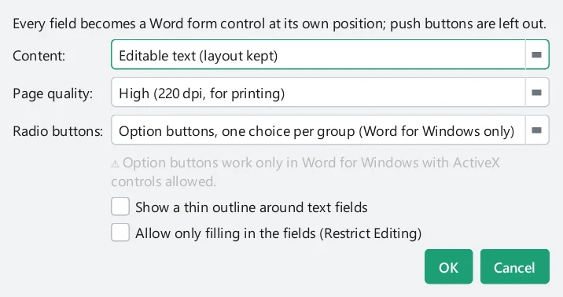
Editable text keeps the layout and makes the text of the page real Word text; Page picture keeps an exact picture of the page. Text and date fields, drop-down lists and check boxes become Word content controls. Radio buttons are written as check boxes (every Word) or as real option buttons (Word for Windows, ActiveX allowed).
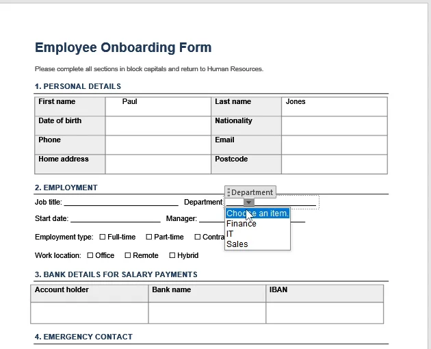
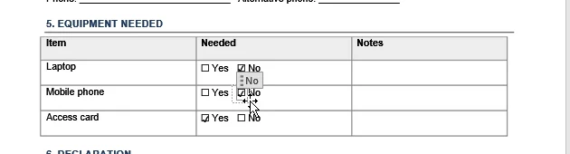
License and trial
Activation, 2 computers, the 7-day trial.
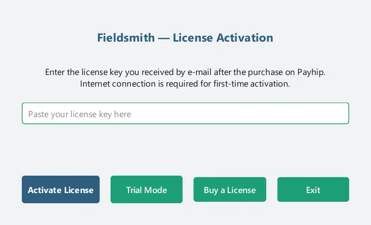
After the purchase you receive a license key by e-mail. Paste it and press Activate License — the internet is needed for the activation; afterwards Fieldsmith works offline and checks the license now and then. A license can be active on 2 computers; to move it, open Help → License… on the old computer and press Deactivate This Computer.
Trial Mode runs for 7 days from the first start and 10 starts. Every tool works; the files saved in one start may cover up to 5 pages of your documents. Help → License… → Enter License Key… removes the limits at once.
Keyboard shortcuts
The quick way to the common commands.
| Action | Shortcut |
|---|---|
| Open PDF / Export PDF / Quit | Ctrl+O / Ctrl+S / Ctrl+Q |
| Save Project / Batch Process | Ctrl+Shift+S / Ctrl+Shift+B |
| Undo / Redo | Ctrl+Z / Ctrl+Shift+Z (or Ctrl+Y) |
| Duplicate / Duplicate with Step | Ctrl+D / Ctrl+Shift+D |
| Check Form | F7 |
| Rename Fields | F2 |
| Name Group / Set Calculation | Ctrl+Shift+G / Ctrl+Shift+C |
| Select Similar | Ctrl+Shift+A |
| Next / previous uncertain field | F3 / Shift+F3 |
| Snap / Page Guides | Ctrl+G / Ctrl+' |
| Side panel / Page thumbnails | Ctrl+B / F4 |
| Zoom in / out | Ctrl+= / Ctrl+- |
| Pan the page | Space + drag |
| Nudge selected fields | Arrows 1 pt · Shift 10 pt · Ctrl 0.25 pt |
| User Guide | F1 |
Troubleshooting
Quick answers to common questions.